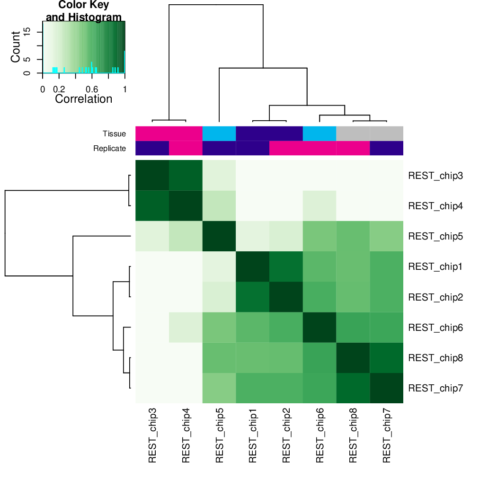
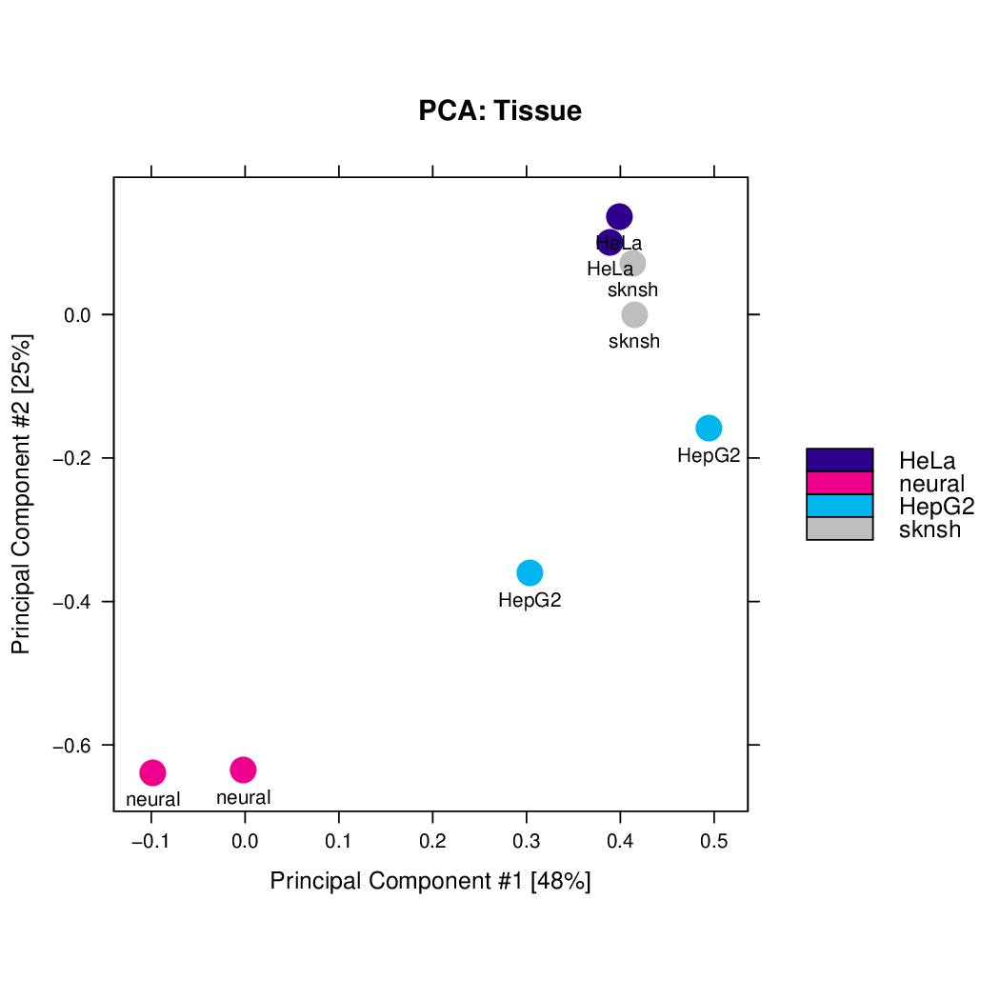
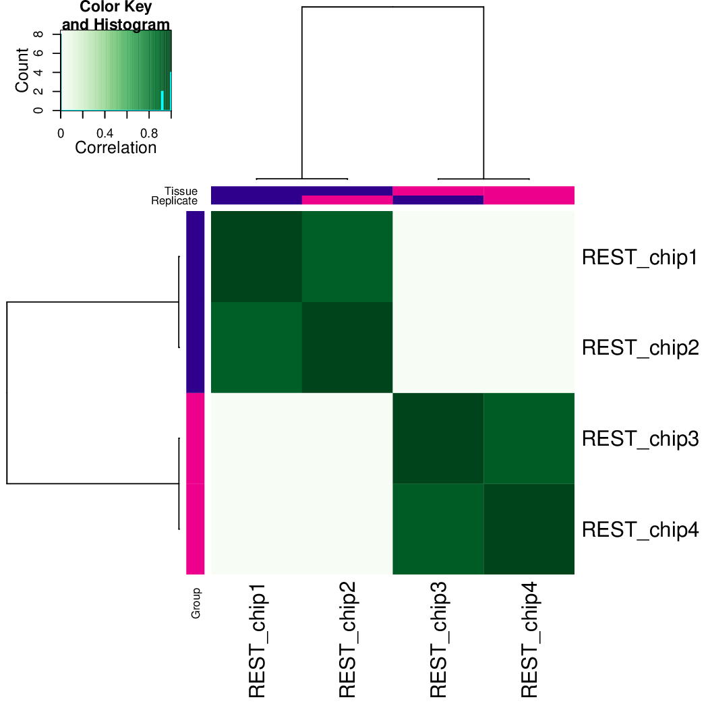
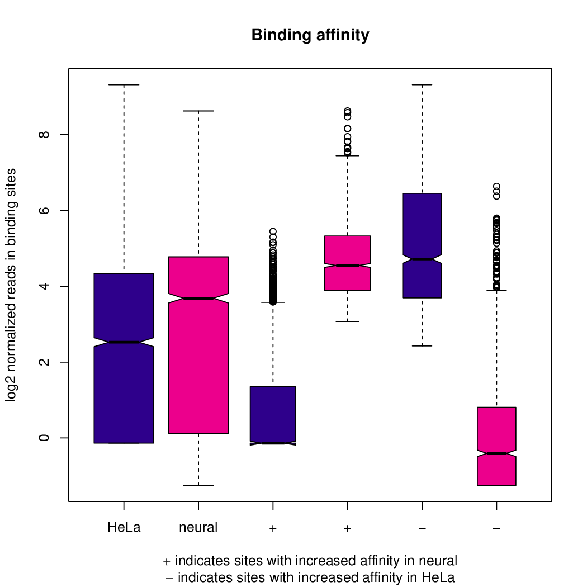
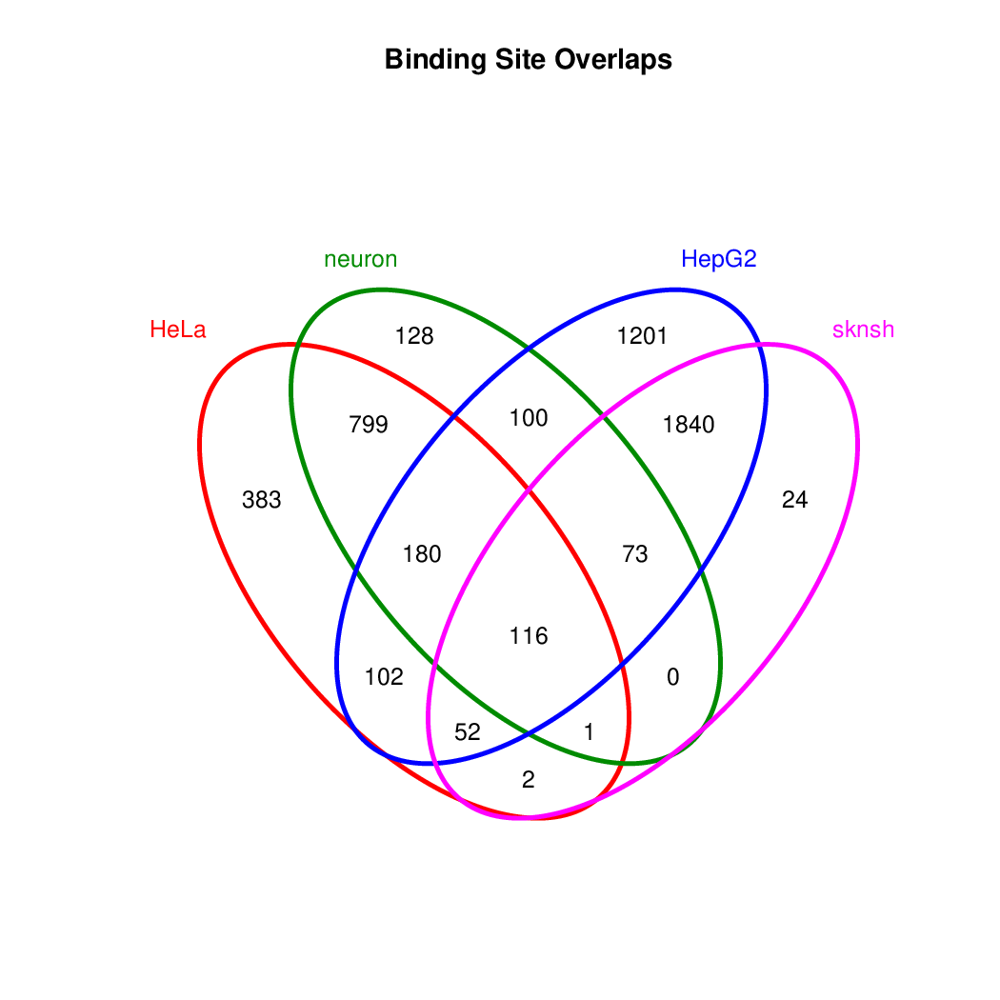
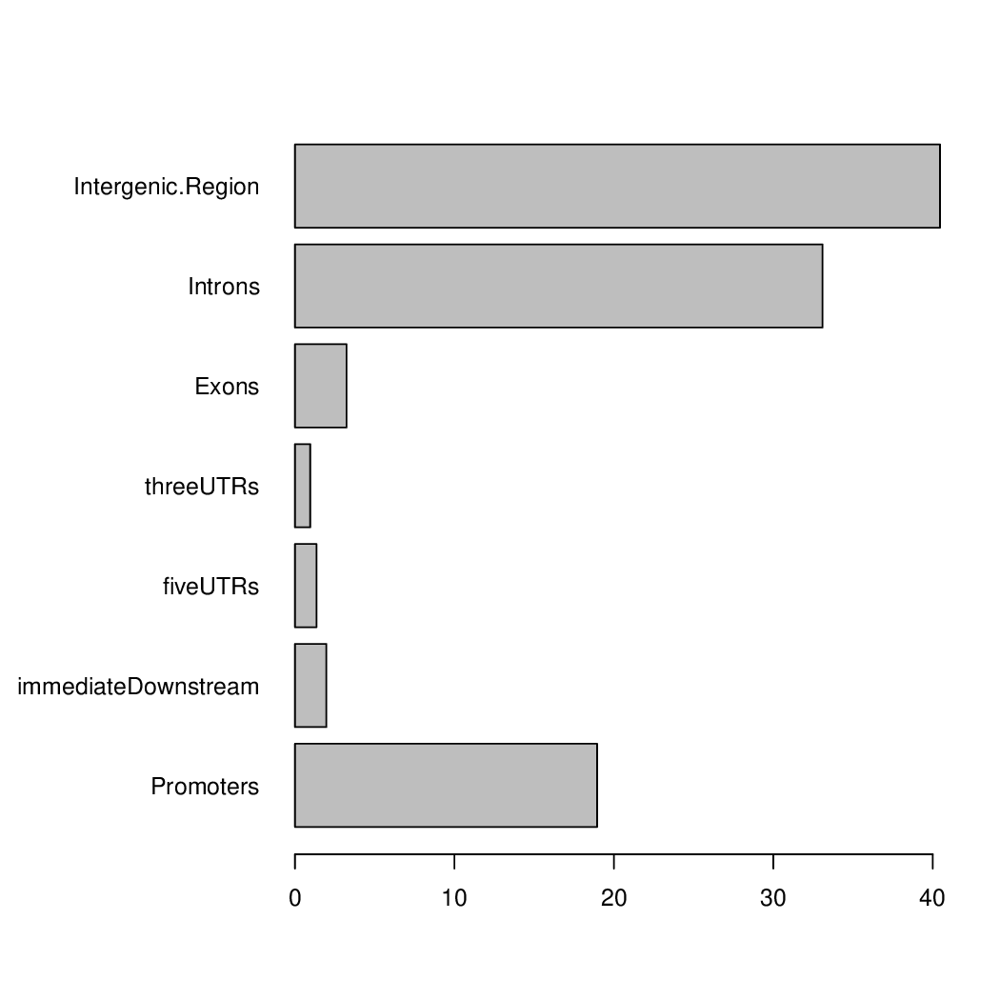

ChIP-seq down-stream analysis¶
Learning outcomes
- obtain differentially bound sites with DiffBind
- annotate differentially bound sites with nearest genes and genomic features with ChIPpeakAnno
- perform functional enrichment analysis to identify predominant biological themes with ChIPpeakAnno and reactome.db
Introduction¶
Welcome back to the second part of the tutorial. In the first part we have learnt how to access the quality of ChIP-seq data and we how to derive a consensus peakset for downstream analyses.
In this part we will learn how to place our peaks in a biological context, by identifying differentially bound sites between two sample groups and annotating these sites to find out predominant biological themes separating the groups.
Data & Methods¶
We will continue using the same data as in the first part of the tutorial. Please note that usually three biological replicates are the minimum requirement for statistical analysis such as in factor occupancy.
Hint
The ENCODE data we are using have only two replicates and we are using them to demonstrate the tools and methodologies. No biological conclusions should be drawn from them, or as a matter of fact, from any other dataset with duplicates only. Just because the tool computes the results does not make it right!
Setting-up¶
The setting-up is the same as for the data processing tutorial, described in detail in section “Setting up directory structure and files”.
If you have not logged out from Uppmax: skip this part.
If you have logged out: log back in, open interactive session, and run chipseq_env.sh script. Note to use correct reservation name.
ssh -Y <username>@rackham.uppmax.uu.se
interactive -A g2020022 -p core -n 4 --reservation=g2020022_2
source ~/chipseq_env.sh
Differential binding¶
Intro¶
We will usage Bioconductor package DiffBind to identify sites that are differentially bound between two sample groups.
The package includes “functions to support the processing of peak sets, including overlapping and merging peak sets, counting sequencing reads overlapping intervals in peak sets, and identifying statistically significantly differentially bound sites based on evidence of binding affinity (measured by differences in read densities). To this end it uses statistical routines developed in an RNA-Seq context (primarily the Bioconductor packages edgeR and DESeq2). Additionally, the package builds on Rgraphics routines to provide a set of standardized plots to aid in binding analysis.”
This means that we will repeat deriving a consensus peakset in a more powerful way before identifying differentially bound sites. Actually, identifying the consensus peaks is an important step that takes up entire chapter in the
DiffBindmanual. We recommend reading entire section: 6_2 Deriving consensus peaksets.
So how does the differential binding affinity analysis work?
“The core functionality of DiffBind is the differential binding affinity analysis, which enables binding sites to be identified that are statistically significantly differentially bound between sample groups. To accomplish this, first a contrast (or contrasts) is established, dividing the samples into groups to be compared. Next the core analysis routines are executed, by default using DESeq2. This will assign a p-value and FDR to each candidate binding site indicating confidence that they are differentially bound.”
Setting-up DiffBind¶
Let’s
- load R packges module that has a bunch of R packages, including DiffBind package, installed on Uppmax.
- go to the right directory given you are keeping files structure as for the first part of the tutorial.
module load R_packages/3.5.0
cd ~/chipseq/analysis/R
In this directory we have placed a sample sheet file named samples_REST.txt that points to our BAM files as well as BED files with called peaks, following DiffBind specifications, and as created in data processing tutorial. To inspect sample sheet file:
head samples_REST.txt
Let’s open R on Uppmax by simply typing R
R
From within R we need to load DiffBind library
library(DiffBind)
Running DiffBind¶
We will now follow DiffBind example to obtain differentially bound sites, given our samples. You may want to open DiffBind tutorial and read section 3 Example Obtaining differentially bound sites while typing the command to get more information about each step.
# reading in the sample information (metadata)
samples = read.csv("samples_REST.txt", sep="\t")
# inspecting the metadata
samples
# creating an object containing data
res=dba(sampleSheet=samples, config=data.frame(RunParallel=FALSE))
# inspecting the object: how many peaks are identified given the default settings?
res
# counting reads mapping to intervals (peaks)
# at this step a normalisation is applied by the default set to: score=DBA_SCORE_TMM_MINUS_FULL
res.cnt = dba.count(res, minOverlap=2, score=DBA_SCORE_TMM_MINUS_FULL, fragmentSize=130)
# inspecting the object: notice the FRiP values!
res.cnt
# plotting the correlation of libraries based on normalised counts of reads in peaks
pdf("correlation_libraries_normalised.pdf")
plot(res.cnt)
dev.off()
# PCA scores plot: data overview
pdf("PCA_normalised_libraries.pdf")
dba.plotPCA(res.cnt,DBA_TISSUE,label=DBA_TISSUE)
dev.off()
# setting the contrast
res.cnt2 = dba.contrast(res.cnt, categories=DBA_TISSUE, minMembers=2)
# inspecting the object: how many contrasts were set in the previous step
res.cnt2
# performing analysis of differential binding
res.cnt3 = dba.analyze(res.cnt2)
# inspecting the object: which condition are most alike, which are most different, is this in line with part one of the tutorial?
dba.show(res.cnt3, bContrasts = T)
# correlation heatmap using only significantly differentially bound sites
# choose the contrast of interest e.g. HeLa vs. neuronal (#1)
pdf("correlation_HeLa_vs_neuronal.pdf")
plot(res.cnt3, contrast=1)
dev.off()
# boxplots to view how read distributions differ between classes of binding sites
# are reads distributed evenly between those that increase binding affinity HeLa vs. in neuronal?
pdf("Boxplot_HeLa_vs_neuronal.pdf")
pvals <- dba.plotBox(res.cnt3, contrast=1)
dev.off()
# extracting differentially binding sites in GRanges
res.db1 = dba.report(res.cnt3, contrast=1)
head(res.db1)
# plotting overlaps of sites bound by REST in different cell types
pdf("binding_site_overlap.pdf")
dba.plotVenn(res.cnt3, 1:4, label1="HeLa",label2="neuron",label3="HepG2",label4="sknsh")
dev.off()
# finally, let's save our R session including the generated data. We will need everything in the next section
save.image("diffBind.RData")
Functional analysis¶
So now we have list of differentially bound sites for comparisons of interest but we do not know much about them besides the genomic location. It is time to them in a biological context. To do so, we will use another Bioconductor package ChIPpeakAnno.
ChIPpeakAnno “is for facilitating the downstream analysis for ChIP-seq experiments. It includes functions to find the nearest gene, exon, miRNA or custom features such as the most conserved elements and other transcription factor binding sites supplied by users, retrieve the sequences around the peak, obtain enriched Gene Ontology (GO) terms or pathways. Starting 2.0.5, new functions have been added for finding the peaks with bi-directional promoters with summary statistics (peaksNearBDP), for summarizing the occurrence of motifs in peaks (summarizePatternInPeaks) and for adding other IDs to annotated peaks or enrichedGO (addGeneIDs). Starting 3.4, permutation test has been added to determine whether there is a significant overlap between two sets of peaks. In addition, binding patterns of multiple transcription factors (TFs) or distributions of multiple epigenetic markers around genomic features could be visualized and compared easily using a side-by-side heatmap and density plot.
Here, we will annotate deferentially bound sites, summarise them in a genomic feature context and obtain enriched GO terms and pathways.
Setting-up ChIPpeakAnno¶
We will continue our R session. If you have logged-out or lost connection or simply want to start fresh: check pathways to R libraries and re-set if needed, navigate to R directory, load R packages, open R and load back the data saved in the differential binding session. We will build on them.
cd ~/chipseq/analysis/R
module load R_packages/3.5.0
R
load("diffBind.RData")
Running ChIPpeakAnno¶
Like with DiffBind package there is a nice ChIPpeakAnno tutorial that you can view along this exercise to read more about the various steps.
# Loading DiffBind library
# we will need it to extract interesting peaks for down-stream analysis
library(DiffBind)
# Loading ChIPpeakAnno library
library(ChIPpeakAnno)
# Loading TSS Annotation For Human Sapiens (GRCh37) Obtained From BiomaRt
data(TSS.human.GRCh37)
# Choosing the peaks for the interesting comparison, e.g.
data.peaks = dba.report(res.cnt3, contrast=1)
head(data.peaks)
# Annotate peaks with information on closest TSS using precompiled annotation data
data.peaksAnno=annotatePeakInBatch(data.peaks, AnnotationData=TSS.human.GRCh37)
# View annotated peaks: can you see the added information in comparsition to data.peaks?
head(data.peaksAnno)
# Saving results
write.table(data.peaksAnno, file="peaks_HeLa_vs_neuronal.txt", sep="\t", row.names=F)
Feel free to build more on the exercises. Follow the ChIPpeakAnno tutorial for ideas.
Locally, we can install few more R libraries and annotation data to inspect our peaks a more, e.g. to find enriched GO terms or REACTOME pathways. Check the local version tutorial for more functional analyses examples.
Concluding remarks and next steps¶
The workflow presented in the tutorials is quite common and it includes recommended steps for analysis of ChIP-seq data. Naturally, there may be different tools or ways to preform similar tasks. New tools are being developed all the time and no single tool can do it all.
In the extra labs we have prepared you can find for instance an alternative way of quality control of ChIP-seq data with R package called ChIPQC as well as alternative differential binding workflow with a packaged called csaw.
Also, there are more types of analyses one can do beyond the one presented here. A common further analysis, for instance, includes identification of short sequence motifs enriched in regions bound by the assayed factor (peaks). We present several methods in the lab Motif finding exercise
Above all, we encourage you to keep trying to analyze your own data. Practice makes perfect :)
Appendix: figures¶
{kind=link}
Fig: Correlation of libraries based on normalised counts of reads in peaks

{kind=link}
Fig: PCA scores plot: data overview using normalised counts of reads in peaks

{kind=link}
Fig: Correlation heatmap using only significantly differentially bound sites for HeLa and neuronal

{kind=link}
Fig: Boxplots of reads distributions between HeLa and neuronal

{kind=link}
Fig: Venn diagram of overlapping sites bound by REST in different cell types

{kind=link}
Fig: Boxplots of reads distributions between HeLa and neuronal